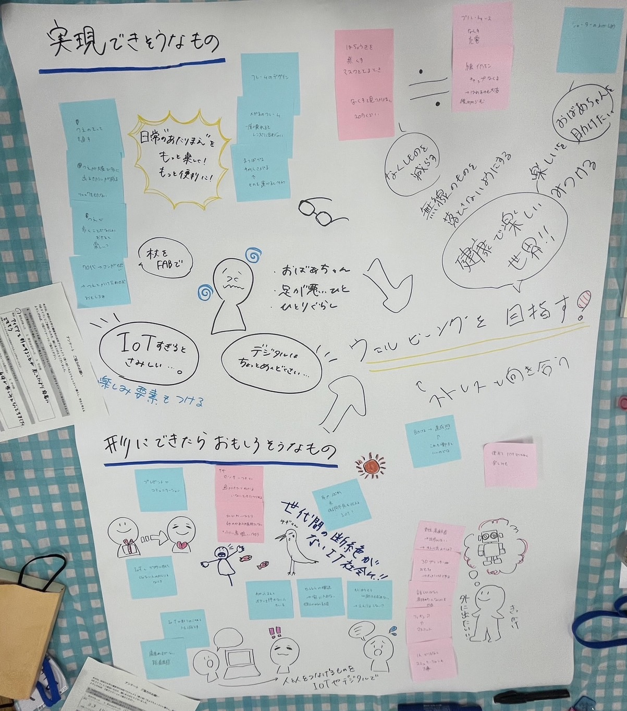

事前情報
三名の方と話し合いをする。
それぞれ抱えている悩みは以下のとおりである。
- 庭の金魚を食べるサギに困っている。カカシを置いても改善しない
- スマホの普段使っていない機能を知りたい
- 高齢者でもわかりやすいパソコンやスマホのIT技術を身近に活用できる生活サポート
実際の話し合い
まず「IoTとは何か」「3Dプリンターやレーザーカッターなどはどういったことができるのか」「私たちができること」について話した。
私たちの班の参加者メンバーは「日常生活の困りごと解決」ではなく、上記の機械のような「最新技術に興味がある」といった人たちであった。
そこで私たち学生側が実際にどういったことにこれらの技術を活用したか経験を話しながら、現在どういった問題を抱えているのか、
自身の周りだけでなく鎌倉市の高齢化などの問題も踏まえ意見出しを行った。
主に挙がった問題
- 高齢者の孤立化/地域交流が無い
- 特に男性高齢者の孤立化
- 高齢者と若者の世代間交流があったらいいな
- メガネが一部壊れてしまえば全て交換しなくてはいけない不便さ
- マスクを外す際、補聴器/ワイヤレスイヤホンを無くしてしまう
- 庭の魚がサギに食べられてしまう
- 高齢者を助けたくても「大丈夫」と言われてしまい遠慮が生じる
これら挙がった問題に対し、実現可能そうなもの・形にできたら面白そうなものに区分けし発表した。
発表時に使用した模造紙

よかった点
地域の方と密接に交流しながらお話をうかがうことができ、多くの問題を発見することができた。
また実際に問題を抱える方から「こういうことは可能か」といった提案をいただけたことで、
自身の発想とは違うところからのアプローチ方法を知ることができ視野が広がった。
実際、鎌倉市以外にも抱える「高齢化」という社会問題に目を向けるいい機会となった。
反省点
時間が足りずできなかったのだが、もう少し実際に作るときのための細かな打ち合わせができたらよかった。
また話が広がりすぐてしまった節があったため、一人進行役を作り議論をまとめていく必要があったように感じる。